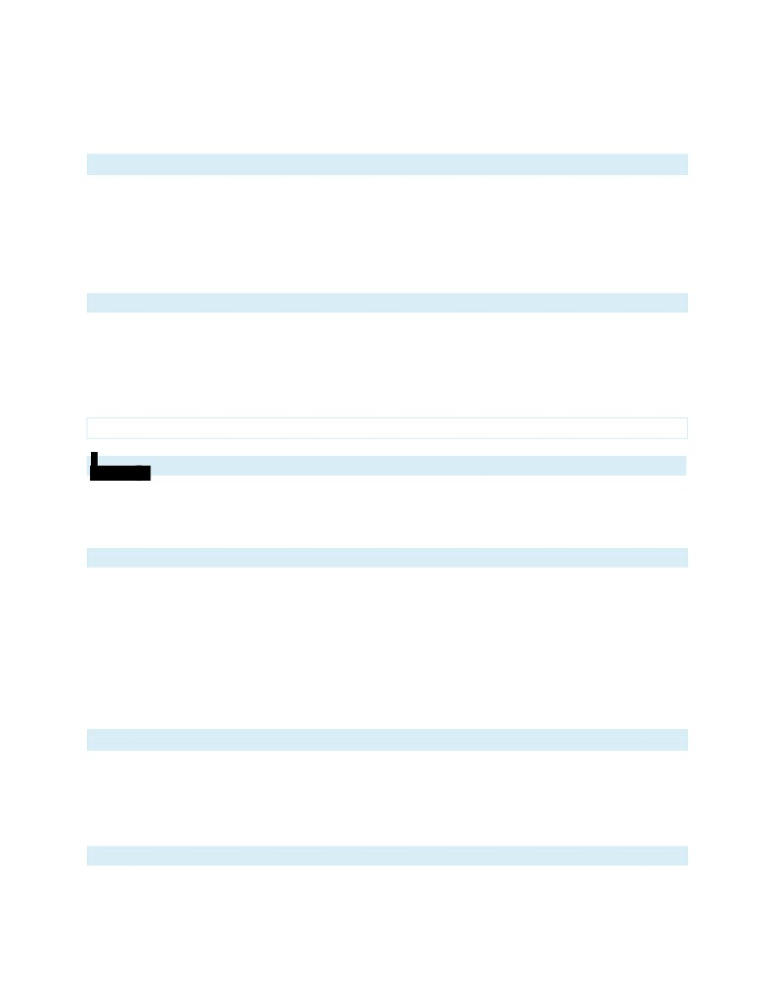
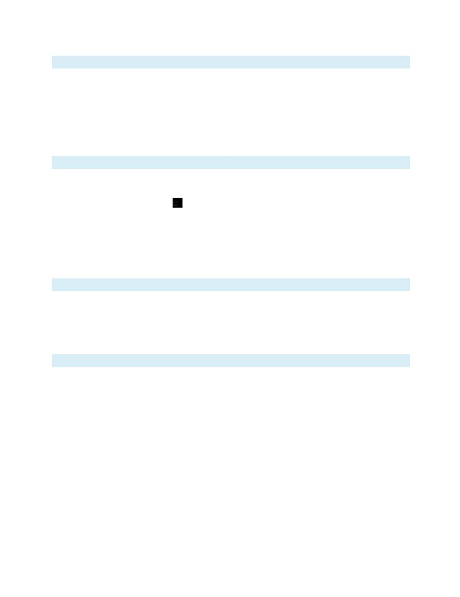

NCERT Solutions for Class 8 English It So Happened Chapter 1
How The Camel Got His Hump Class 8
Chapter 1 How The Camel Got His Hump Exercise Answers & Summary
Comprehension check : Solutions of Questions on Page Number : 3
Q1 :
What tasks, do you think, were assigned to the dog and the ox?
Answer :
The dog was assigned the task of fetching and carrying sticks, while the ox was assigned the task of ploughing.
Q2 :
Why did the camel live in the middle of the desert?
Answer :
The camel lived in the middle of the desert because it did not want to work. It ate sticks, thorns, and prickles, and when anybody
spoke to it, it said “Humph!” and nothing more.
Q3 :
What made the dog, the horse and the ox very angry?
Answer :
The man told the dog, the horse and the ox that since the camel cannot work, he would leave it alone and the three of them would
have to work double-time to make up for the work not done by the camel. This made the three of them very angry.
Q4 :
How did the Djinn know the horse was complaining against the camel?
Answer :
The Djinn knew that the horse was complaining against the camel because he was the in charge of all deserts and knew about
everything happening in relation to his deserts.
Q5 :
The camel was looking at his own reflection in the pool. What does it suggest to you about the camel?
Answer :
The camel's looking at his own reflection in the pool shows that he was proud of his appearance, especially his back. He liked
admiring himself.
Q6 :
The camel said, "Humph" repeatedly. How did it affect him?
Answer :
When the camel said “Humph!” repeatedly despite the Djinn's warning, his back puffed up into a big hump.
Q7 :
What, according to the Djinn, was the use of the "humph"?
Answer :
The Djinn assured the camel that his “humph” would not create a problem for him while working. Since the camel had skipped work
for three days, he could live on his humph and would be able to work for three days without eating. This means that the hump was a
kind of food reserve.
Q8 :
"...he has never yet learnt to behave". In the light of this, what is the writer's opinion about the camel?
Answer :
According to the writer, the camel is still a very lazy animal that is unwilling to work. After he got the hump, the Djinn asked him to go
out of the desert to help the other three animals. It seems that the camel still did not behave himself and worked lazily in the desert
itself. It is for this reason that he was still unable to complete the pending work of those three missed days; and he continued
carrying the hump and living in the desert.
Exercise : Solutions of Questions on Page Number : 6
Q1 :
Discuss the following topic in groups.
Can this story be factually true?
Answer :
This question requires you to use your own perspective as well as your analytical skills. The answer to the question would vary from
one person to another. It is suggested that you read the text carefully and try attempting it on your own.
Q2 :
Discuss the following topics in groups.
What, according to you, is the story about?
Consider the following (i)
How the world began. (ii) Why
everyone should do his/her
share of work seriously.
(iii) How animals are important to humans.
(iv) How the camel got his hump.
Answer :
This question requires you to use your own perspective as well as your analytical skills. The answer to the question would vary from
one person to another. It is suggested that you read the text carefully and try attempting it on your own.
Q3 :
Discuss the following topic in groups.
What did you do over the weekend? Were you generally active or idle? Please check your back before starting to discuss
or answer the question.
Answer :
This question requires you to use your own perspective as well as your analytical skills. The answer to the question would vary from
one person to another. It is suggested that you read the text carefully and try attempting it on your own.
Q4 :
Discuss the following topic in groups.
There are broadly two categories of workers - those who prefer to do today what they can do tomorrow, and those who
prefer to do tomorrow what they can do today. Where do you belong?
Answer :
This question requires you to use your own perspective as well as your analytical skills. The answer to the question would vary from
one person to another. It is suggested that you read the text carefully and try attempting it on your own.
NCERT Solutions for Class 8 English It So Happened Chapter 2
Children at Work Class 8
Chapter 2 Children at Work Exercise Answers & Summary
Comprehension check : Solutions of Questions on Page Number : 9
Q1 :
Velu stood on the platform but he felt "as if he was still on a moving train". Why?
Answer :
Velu stood on the platform but felt as if he was still on a moving train because his legs were still wobbly and shaky after the journey
to Chennai. Usually, the effect of a moving train stays for some time after the end of the journey.
Q2 :
What made him feel miserable?
Answer :
Velu felt miserable and exhausted because he had run away from his village two days ago and had not eaten anything except some
peanuts and a piece of jaggery for the last two days.
Q3 :
(i) Velu travelled without a ticket. Why?
(ii) How did he escape the ticket collector's attention?
Answer :
(i)Velu travelled without a ticket because he had no money to buy a ticket.
(ii)He escaped the ticket collector's attention because luckily the ticket collector did not come to the unreserved compartment.
Q4 :
Why had Velu run away from home?
Answer :
Velu had run away from home because his father used to beat him everyday. His father would also spend the money earned by Velu
and his sisters on drinking.
Q5 :
Why did he decide to follow the 'strange' girl?
Answer :
He decided to follow the 'strange' girl because he did not know where to go and what to do. Basically, he did not have a plan for
himself.
Q6 :
Can Velu read Tamil and English? How do you know?
Answer :
Velu could read Tamil but not English. When he saw the huge signboard, he could not understand what it meant because the writing
was in English. Later, when the girl pointed at a large building, Velu read the Tamil sign and came to know that the building was the
Central Jail.
Q7 :
“If you are not careful, you will soon be counting bars there,” the girl said.
(i) What is she referring to?
(ii) What does she mean when she says “If you are not careful...”?
(She says something a little later which means the same. Find that sentence.)
Answer :
(i)She was referring to the Central Jail.
(ii)When she said “If you are not careful...” to Velu, she meant that he should not get caught. All he had to do to stay away from jail
was to not do something stupid and get caught by policemen.
Q8 :
(i) Where did the girl lead Velu to?
(ii) What did they get to eat?
Answer :
(i)The girl led Velu to Sri Rajarajeshwari Prasanna Kalyana Mandapam. A wedding was taking place there. She took him behind the
hall near a big garbage bin that was overflowing with rubbish.
(ii)Velu got a banana and a vada, while the girl got only one banana to eat.
Q9 :
What work did she do? Think of a one-word answer.
Answer :
She was a ragpicker.
Q10 :
(i) What material are the 'strange' huts made out of?
(ii) Why does Velu find them strange?
Answer :
(i)The 'strange' huts were made out of metal sheets, tyres, bricks, wood, and plastic.
(ii)Velu found the huts strange because in his village, the houses were made of mud and palm leaves. The huts he saw were made
up of all sorts of things and looked like they could fall any moment.
Q11 :
What sort of things did Jaya and children like her collect and what didthey do with those things?
Answer :
Jaya and children like her collected paper, plastic, glass, and other such things. They sold these items to Jam Bazaar Jaggu, who
further sold it to a factory.
Q12 :
Is Velu happy or unhappy to find work? Give a reason for your answer.
Answer :
Velu was unhappy to find work because he had not run away from home to dig through garbage bins. The only work he had ever
done was weeding and taking cows out to graze. However, since he did not know Chennai too well, he decided to work as a
ragpicker till the time he found a better job.
Exercise : Solutions of Questions on Page Number : 16
Q1 :
Is Velu a smart boy? Which instances in the text show that he is or isn't?
Answer :
Yes. Velu seems to be a smart boy.
He ran away from home because of bad circumstances. When he reached Chennai, the girl, who was a ragpicker, tried to help him.
Initially, he thought of not taking her help. However, he was smart enough to realize that he was very hungry and did not know
where to go. Therefore, he followed the girl. He knew how to read Tamil. When the girl told him to eat the banana that she found in
the garbage, he refused at first. However, he quickly realized that he was very hungry and therefore, ate it. Even though he found
the place and even the girl very strange, he continued to walk along with her. He tried to understand why she collected rubbish. He
knew that he had not come to the big city to collect rubbish; however, he adjusted to the circumstances and decided to do the same
work till he found a better job.
Q2 :
Do you think Jaya is a brave and sensitive child with a sense of humour? Find instances of her courage, kind nature and
humour in the text.
Answer :
Yes, Jaya was a brave and sensitive child with a sense of humour.
She was a ragpicker and knew how to live in the city. Jaya knew her way around Chennai, which is a fairly big city. Where Velu was
extremely nervous and confused about crossing the busy street, Jaya dragged him through and crossed the street quickly. She was
a brave girl. She knew from where to find food. She knew that one has to be careful to not get caught by the police.
Jaya was also a very sensitive and kind girl as she helped Velu in all possible ways. She understood that he had run away from
home as she had seen many others like him. She also understood that he was hungry. She helped him cross the road and found
him something to eat. Then, she also told him how he could earn his own money. She also gave him an empty sack and a pair of
shoes for this purpose.
Jaya was also of a humorous nature. When she saw Velu sitting at the platform, she asked him if he was there to become rich.
When Velu was not able to cross the road, she dragged him to the other side of the road and said “What do you think you're doing?
Grazing cows? If you stand around in the middle of the road like that, you'll be chutney.” When Velu asked her if they were going to
eat at the hall where the wedding was taking place, she replied “Hopes!” by shaking her thumb under his nose. They could never
have been able to eat there. When she gave him a banana from the garbage, he was shocked and asked if they would eat that food.
She replied wittily “Chey! What do you think I am? A dog? I only take untouched food.” When he asked her name, she said “Oho! So
you've been following me around without even knowing my name.” She helped him throughout and kept answering his questions
with a sense of humour.
Q3 :
What one throws away as waste may be valuable to others. Do you find this sentence meaningful in the context of this
story? How?
Answer :
Yes, this story shows that what one throws away as waste might be valuable to others. People throw away empty bottles, papers
and broken glasses as waste because these items are not of use for them. Jaya and other children like her collect these items and
other such things and earn a living by selling these to others. People throw away food that is extra or has gone rotten. At weddings,
a lot of food is wasted and goes to the garbage bins. These poor children eat from the bins and satisfy their hunger. The old shoes
and tattered clothes that people throw after use are of a big help to poor people such as these children. In the story, Velu's feet were
burning because of excessive heat. Jaya gave him an old pair of shoes, which did not have laces, so that his feet were somehow
protected.
We can say that this story shows in more ways than one that what one throws away as waste may be valuable to others.
NCERT Solutions for Class 8 English It So Happened Chapter 3
The Selfish Giant Class 8
Chapter 3 The Selfish Giant Exercise Answers & Summary
Comprehension check : Solutions of Questions on Page Number : 20
Q1 :
Why is the Giant called selfish?
Answer :
The Giant is called selfish because he did not let the children play in his garden. He drove them out, built a high wall around his
garden, and put up a board that read 'Trespassers will be prosecuted. '
Q2 :
On one occasion the children said: "How happy we are here!"
Later they said: "How happy we were there!"
What are they referring to in both the cases?
Answer :
In the first case, they are referring to the Giant's garden where they would play while returning from school. They had a great time
whenever they played in the garden.
In the second case, they are again referring to the garden; talking about how happy they were before the Giant stopped them from
playing in his garden.
In both the cases, the children are referring to the Giant's garden.
Q3 :
(i) When spring came, it was still winter in the garden. What does winter stand for or indicate here?
(ii)Winter has been presented like a story with its own characters and their activities. Describe the story in your own words.
Answer :
(i)In the story, winter stands for a negative, desolate and lifeless environment. In this environment, trees and flowers do not blossom.
Here, winter also refers to an atmosphere of depression and laziness. Since birds did not sing, children did not play and spring did
not visit the garden, winter prolonged its stay in the garden.
(ii)When spring came, the birds did not sing as there were no children. The trees too did not blossom. At a particular instance, a
flower put its head out from the grass. However, when it saw the notice board put up by the giant, it felt sad and sorry for the
children, got back inside the grass, and went off to sleep.
On the other hand, snow and frost were very happy. While the snow covered the grass, the frost fell on all the trees. They invited the
North Wind to stay with them, and later even the Hail was asked to visit. The Hail rattled the roof of the castle everyday until some of
it started breaking, and then it ran round the garden again and again as fast as it could.
Q4 :
Was the Giant happy or sad over the state of the garden?
Answer :
The Giant was sad over the state of his garden. He could not understand why spring was so late in coming.
Q5 :
What effect did the linnet's song have over Hail and the North Wind?
Answer :
When the linnet sang, the Hail stopped dancing over his head, and the North Wind stopped roaring.
Q6 :
The little child's hands and feet had marks of nails. Who does the child remind you of? Give a reason for your answer.
Answer :
The child reminds one of Jesus Christ. When the Giant met the little child for the second time, he saw imprints of nails on his palms
and feet. When Christ was crucified, nails were dug into his palms and feet. He had sacrificed his life for humanity, so that the sins
of the world would be washed away. That is why the child told the Giant that those were the wounds of love.
Q7 :
(i) The Giant saw a most wonderful sight. What did he see?
(ii) What did he realise on seeing it?
Answer :
(i)The Giant saw that the children had entered the garden through a small hole in the wall, and were sitting on the branches of trees.
There was a child on every tree. The trees had covered themselves with blossoms as they were glad to have the children back. The
birds were flying about and twittering in delight, and the flowers and grass were laughing out loud.
(ii)He realised that spring did not come to his garden because he had prevented the children from playing in his garden. He realised
that he was selfish not to allow the children to play in his garden.
Q8 :
Is there something like this garden near where you live? Would you like one (without the Giant perhaps) and why? What
would you do to keep it in good shape?
Answer :
This question requires you to use your own perspective as well as your analytical skills. The answer to the question would vary from
one person to another. It is suggested that you read the text carefully and try attempting it on your own.
Q9 :
Why was it still winter in one corner of the garden?
Answer :
In one corner of the garden, there was a tree all covered with frost and snow. The North Wind was blowing and roaring above it. A
little boy was standing in front of it, but could not reach its branches. As a result, there was still winter in this part of the garden.
Q10 :
Describe the first meeting of the little boy and the Giant.
Answer :
The first meeting of the little boy and the Giant was beneath the tree that was covered with frost and snow. The Giant took him
gently in his hands and put him up into the tree. The tree at once blossomed, and the birds came and sang on it. The little boy
stretched out his two arms, flung them round the Giant's neck, and kissed him.
Q11 :
Describe their second meeting after a long interval.
Answer :
Their second meeting took place after a long interval; on a winter morning. The Giant was surprised to see that in the farthest corner
of the garden, there was a tree covered with lovely white blossoms. Its branches were golden, and silver fruit hung down from them.
The little boy stood underneath it. The Giant went towards him in great joy. As he came near the child, his face grew red with anger
when he saw that there were imprints of nails on his palms and feet. The Giant asked the little boy who had wounded him, and told
him that he would slay the one who had done so. The child answered that those were the wounds of love. Kneeling before the little
child in awe, the Giant asked him who he was. The child smiled at the Giant, and said to him that since he had let him play once in
his garden, that day he would come with him to his garden, which was paradise.
Q12 :
The Giant lay dead, all covered with white blossoms. What does this sentence indicate about the once selfish Giant?
Answer :
The white blossoms that covered the Giant indicate that he was not selfish anymore. He had understood how mean he had been by
not allowing the children to play in his garden. He had realised his mistake, and was kind to the children from then on. That is why
his body was covered with white blossoms when he died.
NCERT Solutions for Class 8 English It So Happened Chapter 4
The Treasure Within Class 8
Chapter 4 The Treasure Within Exercise Answers & Summary
Comprehension check : Solutions of Questions on Page Number : 28
Q1 :
What did Hafeez contractor have nightmares about?
Answer :
Hafeez Contractor got nightmares about appearing for a mathematics examination in which he did not know anything.
Q2 :
What did the Principal say to him, which influenced him deeply?
Answer :
When Hafeez was in the eleventh standard, his Principal said to him that he had been seeing him since day one. He was a good
student. However, he had never studied. The principal told him that so far he had taken care of him, but from then on he was by
himself. He mentioned how Hafeez's mother had worked extremely hard to bring him up and had paid all his fees for all those years.
However, he had only played games. He thus told Hafeez to rise to the occasion and study. These words influenced Hafeez in a
deep manner.
Q3 :
"... that year I did not step out onto the field." What was he busy doing that year?
Answer :
He was busy studying that year. He went for prayers, and just ate and studied.
Q4 :
(i) What "distraction" did Hafeez Contractor create one day? (ii)
Would you have liked to participate in the "distraction" had you
been with him?
Answer :
(i)Hafeez mentions how one day he did not want to study. Thus, he decided to create a “distraction”, and for one whole hour, he
played 'chor-police' with his classmates.
Q5 :
Is it likely that someone who is original and intelligent does not do very well at school? Should such a learner be called a
failure? If not, why not?
Answer :
It is likely that someone who is original and intelligent does not do very well at school. Such a learner should not be called a failure
as everyone has his or her own strengths and weaknesses. Those who are academically brilliant do well in other fields. Hafeez
Contractor was not a very good student. However, he had the talent for construction, and he is now one of the leading architects.
Each individual has his or her own individual talents, which may or may not be visible in the academic report. That is why students
should be encouraged to showcase their talents, and work on them. They should not be called failures.
Q6 :
Hafeez Contractor wanted to join the police force. Why didn't he?
Answer :
Hefeez Contractor did not join the police force because his mother told him not to. His mother told him to do his graduation.
Q7 :
Who, in your view, is an 'unusual' learner?
Answer :
This question requires you to use your own perspective as well as your analytical skills. The answer to the question would vary from
one person to another. It is suggested that you read the text carefully and try attempting it on your own.
Q8 :
In the architect's office, Hafeez Contractor was advised to dropeverything and join architecture. Why?
Answer :
When Hafeez Contractor was in the architect's office, he saw somebody drawing a window detail. He told him that his drawing was
wrong, and that the window he had drawn would not open. Later, it was found that the drawing was indeed wrong. Seeing this, his
cousin's husband asked him to draw a few specific things, which he immediately did. He then asked him to design a house and he
completed this task as well. His potential for architecture was clearly visible from these incidents. Thus, he was told to drop
everything and join architecture.
Q9 :
What can schools do to draw out the best in unusual learners? Suggest whatever seems reasonable to you.
Answer :
This question requires you to use your own perspective as well as your analytical skills. The answer to the question would vary from
one person to another. It is suggested that you read the text carefully and try attempting it on your own.
Q10 :
(i) What was Mrs Gupta's advice to Hafeez contractor?
(ii) What made her advise him so?
Answer :
(i) Mrs. Gupta, who was Hafeez Contractor's teacher in the second and third grades, advised him to become an architect when he
grew up.
(ii)She always said to him that he was quite useless in everything, except for his sketches, which were always very good. Therefore,
she advised him to take up architecture.
Q11 :
How did he help fellow students who had lost a button?
Answer :
When his fellow students lost a button, he helped them by cutting a button from chalk, by using a blade.
Q12 :
Which rules did he break as a school boy?
Answer :
As a school boy, he was more interested in things other than academics. If it started raining outside, he would think of the flowing
water, and how to build a dam to block it. He thought about the flow of water within the dam, and how much of water the dam would
be able to hold. He was interested only in games, running around, and playing jokes and pranks on others. He copied in class
during exams. He used to get hold of the examination paper that had been prepared, and study it as he could not remember things
that had been taught to him in class.
Q13 :
(i) What is Hafeez contractor's definition of mathematics?
(ii) How would you want to define mathematics? Do you like the subject?
Answer :
(i)He said that putting design, construction, psychology and sociology together, and making a sketch from all that is 'mathematics'.
NCERT Solutions for Class 8 English It So Happened Chapter 5
Princess September Class 8
Chapter 5 Princess September Exercise Answers & Summary
Comprehension check : Solutions of Questions on Page Number : 38
Q1 :
How many daughters did the royal couple have?
Answer :
The royal couple had nine daughters.
Q2 :
Why were they named after the months of the year?
Answer :
They were named after the months of the year because the King and the Queen had many daughters, and it confused the Queen to
have to remember so many names.
Q3 :
Answer :
The King had a peculiar habit. What was it? Why is it called peculiar?
The King's peculiar habit was that instead of receiving gifts on his birthday, he gave them. It is called peculiar because usually,
people receive gifts on their birthdays.
Q4 :
(i) What was Princess September's reaction to the loss of her parrot?
(ii) What was her mother's reaction to it?
(iii) What do the reactions indicate about the nature and temperament of each?
Answer :
(i) Princess September burst into a flood of tears at the loss of her parrot. She kept crying and nothing comforted her.
(ii) Her mother declared it as nonsense, and said that she should go to bed without any supper.
(iii)The Princess' reaction indicates that she was a young, sensitive child. That is why she cried over the loss of her parrot. It was a
very important thing for her. The loss of her parrot filled her with grief.
Her mother's reaction indicates that she was a little harsh. She did not understand her daughter's grief and console her. She did not
think that the dying of the parrot was in any way a significant incident to shed tears.
Q5 :
What pulled the Princess out of her gloom?

Answer :
When the Princess was lying on her bed crying, she saw a little bird hop into her room. She wiped her tears and heard the beautiful
song that the bird sang. This brought the Princess out of her gloom.
Q6 :
How did the Maids of Honour come to know that the Princess and the bird had become intimate friends?
Answer :
When the Maids of Honour brought in the princess' breakfast, they saw the bird eat rice out of her hand, and have its bath in her
saucer. This showed them that the princess and the bird had become intimate friends.
Q7 :
The new bird was full of new songs but the old parrots always repeated themselves. What did they say?
Answer :
All the old parrots could say 'God save the king' and some of them could even say 'Pretty Polly' in seven languages.
Q8 :
Answer :
What is the King's opinion about his Councillors? Why did he form that opinion?
The King said that the parrots repeating 'Pretty Polly' in seven different languages reminded him of his Councillors who said the
same thing in seven different ways, and meant nothing whichever way they said it. This was similar to the way the parrots kept
repeating what they had learnt, without knowing the meaning of what they said.
Q9 :
(i) The eight Princesses made an offer to Princess September. What was it?
(ii) Why, in your view, did they do it?
Answer :
(i) The eight princesses offered to buy a lovely green and yellow parrot for Princess September by putting in all their pocket money.
(ii)They did so because they were distressed by the fact that everybody was praising Princess September's bird, which could sing.
Their parrots looked sad and repeated the same things. They wanted her to have the same pet as they had.
Q10 :
What did the sisters advise the Princess to do about her bird?
Answer :
The sisters advised the Princess to keep her bird in a cage so that she could be sure of where it was.
Q11 :
In the following sentence elaborate the parts given in bold. Under the circumstances it was a very unfortunate remark for
the bird to make.
Answer :
Under the circumstances
After what her sisters advised her to do, the Princess was worried about the bird. She feared that the bird might forget her or start
liking someone else. She felt that in such a circumstance, she would lose her little pet.
A very unfortunate remark
On returning, the bird said that it very nearly did not come back that night as its father-in-law was giving a party and had wanted it to
stay. This was the last thing that the princess wanted to hear as it only confirmed her fears.
Q12 :
(i) What did Princess September do to ensure the safety of her pet?
(ii) How did the bird react to it?
Answer :
(i) To ensure the safety of her pet, Princess September put it in the cage.
(ii)The bird at first suspected nothing, and was surprised when she carried it over to the cage. After a moment or two, it asked what
the joke was. When the Princess said that it would be much safer in the cage as there were many cats roaming about, it said that
it did not mind for that one time, as long as she let it out in the morning.
Q13 :
Why did the bird refuse to be taken out in her cage?
Answer :
The bird refused to be taken out in her cage because it was not the same thing as flying. It said that the rice fields, the lake and the
willow trees looked quite different when seen through the bars of a cage.
Q14 :
(i) What persuaded Princess September to give the bird his freedom again?
(ii) How did the bird react to it?
Answer :
(i)
When one day she saw the little bird lying at the bottom with its eyes closed, she thought it was dead. She opened the
door and took the bird out. Feeling its heart beating, she tried to wake it up and cried. One of her tears fell on the bird and it opened
its eyes to see that it was out of the cage. It said that it could not sing unless it was free, and if it could not sing, it would die. This
persuaded her to give it its freedom again. She wanted it to be happy as she loved it.
(ii)
The bird said that it would come back because it loved her. It would sing the loveliest of songs for her. It would go far
away, but would always come back and shall never forget her. Then, it flew away into the sky.
Q15 :
Princess September kept her window open day and night.
(i) How did it help the bird?
(ii) How did it help the Princess herself?
Answer :
(i) Princess September kept her window open day and night. This helped the bird as it could come into her room and leave
whenever it felt like.
(ii) Sleeping with the window open proved to be very good for the princess as she grew extremely beautiful because of this reason.
Q16 :
The eight sisters kept their windows shut. How did it affect them?
Answer :
The eight sisters grew extremely ugly and disagreeable. This was because they kept their windows shut.
NCERT Solutions for Class 8 English It So Happened Chapter 6
The Fight Class 8
Chapter 6 The Fight Exercise Answers & Summary
Comprehension check : Solutions of Questions on Page Number : 49
Q1 :
In what way is the forest pool different from the one which Ranji knewin the Rajputana desert?
Answer :
The forest pool was clean, cold and inviting, whereas the Rajputana desert had sticky, muddy pools where buffaloes wallowed and
women washed clothes.
Q2 :
The other boy asked Ranji to 'explain' himself.
(i) What did he expect Ranji to say?
(ii) Was he, in your opinion, right or wrong to ask this question?
Answer :
(i)He expected Ranji to apologise to him and immediately leave the pool.
(ii)He was wrong to ask this question because the pool was in the forest. It was not his personal property.
Q3 :
Between Ranji and the other boy, who is trying to start a quarrel? Givea reason for your answer.
Answer :
Between Ranji and the other boy, the other boy was trying to start a quarrel. When Ranji saw him, he did not say anything. It was the
otherboy who asked Ranji to explain himself. Ranji was prepared to be friendly, but was taken aback by the boy's hostile tone. He
even asked the boy to come and swim with him. However, the boy said that it was his pool, and started a fight by calling himself a
'warrior'.
Q4 :
"Then we will have to continue the fight," said the other.
(i) What made him say that?
(ii) Did the fight continue? If not, why not?
Answer :
(i)When even after a lot of fighting Ranji refused to leave the pool, the other boy said that they would have to continue their fight.
(ii)No, the fight did not continue. After they decided to continue the fight, neither of them took the initiative. Then, the other boy said
that they would continue the fight the next day if Ranji dared to come back to the pool.
Q5 :
What is it that Ranji finds difficult to explain at home?
Answer :
At home, Ranji found it difficult to explain the cuts and bruises that showed on his face, legs and arms. It was difficult to hide the fact
that he had been involved in a fight.
Q6 :
Ranji sees his adversary in the bazaar.
(i) What does he wish to do?
(ii) What does he actually do, and why?
Answer :
(i)When Ranji saw his adversary in the bazaar, he wished to turn away and look elsewhere. Then, he wished to throw the lemonade
bottle at his enemy.
(ii)He actually stood his ground and scowled at the other boy. He did not throw the lemonade bottle because he did not want to start
a fight in the bazaar.
Q7 :
Ranji is not at all eager for a second fight. Why does he go back to thepool, then?
Answer :
Ranji was not eager for a second fight, but he still went back to the pool because if he had not turned up, it would have been an
acknowledgement of his defeat. He could not quietly accept his defeat. If he surrendered, he would be beaten forever. However, if
he fought and got beaten, he could come again to fight and be beaten again. As long as he fought, he had the right to the pool in the
forest.
Q8 :
Is fighting the only way of resolving differences of opinion? What else can be done to reach a mutually acceptable
settlement?
Answer :
This question requires you to use your own perspective as well as your analytical skills. The answer to the question would vary from
one person to another. It is suggested that you read the text carefully and try attempting it on your own.
Q9 :
Have you ever been in a serious fight only to realize later that it was unnecessary and futile? Share you experience/views
with others frankly and honestly.
Answer :
This question requires you to use your own perspective as well as your analytical skills. The answer to the question would vary from
one person to another. It is suggested that you read the text carefully and try attempting it on your own.
Q10 :
Why do some of us find it necessary to prove that we are better than others? Will you be amused or annoyed to read the
following sign at the back of the car in front of you?
I may be going slow but I am ahead of you.
Answer :
This question requires you to use your own perspective as well as your analytical skills. The answer to the question would vary from
one person to another. It is suggested that you read the text carefully and try attempting it on your own.
Q11 :
Who was the better swimmer? How do you know it?
Answer :
Ranji was the better swimmer. When the other boy made fun of him by saying that he would not be able to swim across the pool,
Ranji dived straight into the water and surfaced at the other end in a flash. The boy was amazed at how well Ranji had dived, and
later, at how he had swum underwater. He said that he did not know how to dive or swim underwater, and asked Ranji to teach him
both.
Q12 :
What surprises the warrior?
Answer :
The warrior was surprised to see how well Ranji had divedand later, at how he had swum underwater.
Q13 :
Now that they are at the pool, why don't they continue the fight?
Answer :
The warrior asked Ranji to teach him how to dive. Ranji agreed. He even surprised the warrior by swimming under water. The
warrior made efforts to dive and swim underwater. Ranji did not discourage him, and promised to teach him. In return, the warrior
promised to turn Ranji into a wrestler. Consequently, they became friends and therefore, did not continue the fight.
Q14 :
Ranji's superiority over the other boy is obvious in the following:
physical strength, good diving, his being a fighter, sense of humour, swimming under water, making a good point,
willingness to help.
Underline the relevant phrases.
Answer :
The following are the areas in which Ranji is superior to the other boy:good diving, swimming under water and willingness to help.
Q15 :
What, according to you, makes the two adversaries turn into good friends in a matter of minutes? Explain it as you have
understood it.
Answer :
The two adversaries admired certain skills in each other, which they themselves lacked. When the other boy saw how well Ranji
dived and swam underwater, he forgot about the fight and asked him to teach him these skills. Ranji's willingness to help the other
boy made their friendship possible. Noticing Ranji's thin body, the other boy promised him that he would turn him into a wrestler like
himself. As a result, in a matter of minutes, the adversaries turned into good friends.
NCERT Solutions for Class 8 English It So Happened Chapter 7
The Open Window Class 8
Chapter 7 The Open Window Exercise Answers & Summary
Comprehension check : Solutions of Questions on Page Number : 57
Q1 :
Why had Framton Nuttel come to the "rural retreat"?
Answer :
Framton Nuttel had come to the “rural retreat” to undergo a nerve cure.
Q2 :
Why had his sister given him letters of introduction to people livingthere?
Answer :
His sister had given him letters of introduction to people living there as he did not know anyone there. She knew that he would not
speak to anybody and his nerves would be worse from moping. That is why she gave him letters of introduction to all the people she
knew there.
Q3 :
What had happened in the Sappleton family as narrated by the niece?
Answer :
The niece told Nuttel that about three years ago Mrs Sappleton's husband and her two younger brothers had gone for their day's
shooting through the open French window. They never came back. In crossing the moor to their favourite shooting spot, they were
all engulfed in a piece of bog. It was a wet summer and places that were safe in other years gave way suddenly without warning.
Their bodies were never recovered.
Q4 :
What did Mrs Sappleton say about the open window?
Answer :
Mrs Sappleton said that she hoped Framton did not mind the open window. She told him that her husband and her brothers would
be coming home directly from their shooting, and they always came that way.
Q5 :
The horror on the girl's face made Framton swing around in his seat. What did he see?
Answer :
When Framton turned around, he saw in the deepening twilight three figures walking across the lawn towards the window. They all
carried guns under their arms and one of them also had a white coat hung over his shoulders. A tired brown spaniel kept close at
their heels. They neared the house noiselessly, and then a hoarse young voice said, “I say, Bertie, why do you bound?”
Q6 :
Is this a mystery story? Give a reason for your answer.
Answer :
While explaining the mystery behind the open French window, theevents narrated by Mrs Sappleton's niece manage to create a
sense of foreboding. Later, when the three men approach the open window, the reader (like Framton) can only logically conclude
that they were ghosts. Hence, one can say that this story does contain elements of the mysterious.
Q7 :
Why did Framton rush out wildly?
Answer :
Framton rushed out wildly because he was in a “chill shock of nameless fear”. He was scared and shocked to see the threemen,
who he thought were dead, walking towards the open window.
Q8 :
You are familiar with the 'irony' of the situation in a story. (Remember The Cop and the Anthem in Class VII Supplementary
Reader!) Which situations in 'The Open Window' are good examples of the use of irony?
Answer :
Framton Nuttel had retired to the country and was visiting different people in order to heal his bad nerves. However, his visit to Mrs
Sappleton's house did just the opposite. This visit made him lose his nerves completely. This is the most ironic part of the story.
When Mrs Sappleton told him that she was waiting for her husband and her three brothers, who were to arrive anytime, Nuttel felt
that she was in delusion. However, ironically, it was he who was in delusion when he mistook the three men as ghosts.
WhenNuttel ran away, Mrs Sappleton said that the way he had rushed out wildly, it seemed as if he had seen a ghost. Ironically, he
did run away because he thought he had seen ghosts.
Q9 :
What was the girl's explanation for his lightning exit?
Answer :
The girl said that the spaniel was the reason for his lightning exit. She said that he had a horror of dogs. She explained that he was
once hunted into a cemetery somewhere on the banks of the Ganges by a pack of dogs. He had to spend the night in a newly dug
grave, with the creatures snarling, grinning and foaming just above him.
Q10 :
Which phrases/sentences in the text do you find difficult to understand? Select a few and guess the meaning of each.
Rewrite a simple paraphrase of each.
Answer :
This question requires you to use your own perspective as well as your analytical skills. The answer to the question would vary from
one person to another. It is suggested that you read the text carefully and try attempting it on your own.
NCERT Solutions for Class 8 English It So Happened Chapter 8
Jalebis Class 8
Chapter 8 Jalebis Exercise Answers & Summary
Comprehension check : Solutions of Questions on Page Number : 65
Q1 :
Why didn't he pay the school fees on the day he brought money toschool?
Answer :
He did not pay the school fees on the day he brought money to school because Master Ghulam Mohammed (the teacher who
collected the fees) was on leave, and it would be collected the next day.
Q2 :
(i) What were the coins 'saying' to him?
(ii) Do you think they were misguiding him?
Answer :
(i)The coins were asking him to buy the jalebis. They said that those fresh, hot jalebiswere not coming out for nothing.Jalebiswere
meant to be eaten, and only those with money in their pocket could eat them. They also said that money was meant to be spent,
and only those who liked jalebisspent it.
(ii)Yes, they were misguiding him. Even though the money was for the payment of fees, they urged him to spend all onjalebis.
Q3 :
Why didn't he take the coins' advice? Give two or three reasons.
Answer :
He did not take the coins' advice because he was a good boy. He knew that the coins were misguiding him. He said he got so much
at home that he considered even looking at something in the market a sin. Besides, the coins were his fees. If he spent them that
day, he would not be able to show his face to Master Ghulam Mohammed the next day at school, and after that to God. He also said
that when Master Ghulam Mohammed got angry, he made students stand on the bench till the last bell would ring. Therefore, he
decided not to take the coins' advice.
Q4 :
(i) What did the oldest coin tell him?
(ii) Did he follow his advice? If not, why not?
Answer :
(i)The oldest coin said that they were trying to tell him something for his own good. It said that he would get the scholarship money
the next day, and with that money he could pay his fees. Hence, he could very well buy the jalebiswith the fees money.
(ii)No, he did not follow its advice. Even though his mouth watered, he remembered the fact that he was among the most promising
students at school. In the fourth standard exams, he had even won a scholarship of four rupees a month. Also, he came from a
particularly well-to-do family and enjoyed considerable prestige. He had never once been beaten. On the contrary, his teacher had
got him to beat the other boys. He thought that for a child of such status, standing in the middle of the market and eating jalebiswas
inappropriate. Giving these reasons, he returned home.
Q5 :
He reached home with the coins in his pocket. What happened then?
Answer :
When he reached home, the coins began to speakagain. When he went inside to have lunch, they began to shriek. He was so
thoroughly fed up that he rushed out of the house barefoot and ran towards the market. Although he was terrified, he quickly asked
for a whole rupee worth of jalebis. The halwaiopened up a whole newspaper and heaped a pile ofjalebison it.
Q6 :
(i) Why didn't he eat all the jalebis he had bought?
(ii) What did he do with the remaining jalebis?
Answer :
(i) He did not eat all the jalebishe had bought because he had eaten so many of them that if anybody pressed his stomach a little,
jalebiswould have popped out of his ears and nostrils.
(ii)He distributed the remaining jalebisto the children who had assembled in the galiwhere he was eating the jalebis.
Q7 :
"The fear was killing me." What was the fear?
Answer :
The fear was of getting caught and his parents finding out that he had eaten so many jalebis. He burped with every breath. With
every burp, there was the danger of bringing out a jalebior two. This fear was killing him.
Q8 :
“Children's stomachs are like digestion machines.” What do youunderstand by that? Do you agree?
Answer :
This means that children have a very good digestive system. They can eat as much as they can, and their stomach digests the food
easily.
Q9 :
How did he plan to pay the fees the next day?
Answer :
He planned to pay the fees with the previous month's scholarship that he would get the next day.

Q10 :
When it is time to pay the fees, what does he do? How is he disobeyingthe elders by doing so?
Answer :
When it was time to pay the fees, he tucked his bag under his arm and left the school. He kept walking, praying for some miracle to
happen which would save him that one time. He reached the Kambelpur railway station. The elders had warned him to never cross
the railway tracks. They had also warned him that one must never eat sweets with one's fees money. However, he had disobeyed
them by doing so.
Q11 :
Select and read sentences that show
•
that the boy is tempted to eat jalebis
that he is feeling guilty.
•
that he is justifying a wrong deed
Answer :
This question requires you to use your own perspective as well as your analytical skills. The answer to the question would vary from
one person to another. It is suggested that you read the text carefully and try attempting it on your own.
Q12 :
What was the consequence of buying jalebis with the fees money?
Answer :
The consequence of buying jalebiswith the fees money was that for the first time in his life he was absent from his school.
Q13 :
Discuss the following points.
•
Is the boy intelligent? If so, what is the evidence of it?
•
Does his outlook on the jalebis episode change after class VIII? Does he see that episode in a new light?
•
Why are coins made to 'talk' in this story? What purpose does it serve?
Answer :
(i)Yes, the boy was intelligent. In school, he was among the most promising students. In his fourth standard exam, he had won a
scholarship of four rupees a month. He was also going to get the previous month's scholarship on the day he had to pay his fees.
Also, he had never been absent from school.
(ii)Up to class VIII, he kept wondering what harm it could have possibly caused anyone if God had sent him four rupees that day.
However, later, he came to the conclusion that if God were to provide all for the asking, then man would still be living in nests such
as vultures and crows, and would not have learnt the art of making jalebis. By this he meant that man would not make any efforts at
all if God gave him everything he wished for.
(iii)Coins are made to 'talk' in the story to show the greedy nature of the boy. His good nature, which prevented him from spending
money on jalebis, comes out in the form of the words spoken by him. His greed, which was pushing him to get the jalebisand devour
them, is brought out in the words uttered by the coins.
Q14 :
His prayer to God is like a lawyer's defence of a bad case. Does heargue his case well? What are the points he makes?
Answer :
He did not argue well. He was mostly trying to impress God and make promises. He said that he had memorised the entire namaaz.
He even knew the last ten suratsof the Quran by heart. He said that he was a devoted servant of God and needed the fees money.
He admitted his mistake. However, in his defence, he also said that he did not eat all the jalebis. He shared them with other children.
He promised that he would never eat sweets with fees money again and if he did, then he would deserve a thief's punishment. He
said that there was no shortage of anything in God's treasury. Even thechaprasigot a lot of money for his work. He finally said that
he was the nephew of a big officer and therefore, God should give him the money as he had asked for only four rupees.
Q15 :
He offers to play a game with Allah Miyan. What is the game?
Answer :
The game was that he would go from where he wasstanding to the signal. Then, God would secretly place four rupees under a big
rock. Meanwhile, he would touch the signal and come back. Then, when he would lift the rock and find the four rupees underneath.
Q16 :
Did he get four rupees by playing the game? What did he get to seeunder the rock?
Answer :
No, he did not get four rupees by playing the game. When he lifted the rock, he saw a big hairy worm curling, twisting and wriggling
towards him.
Q17 :
If God had granted his wish that day, what harm would it have causedhim in later life?
Answer :
If God had granted his wish that day, he would never have learnt from his mistake. He would have continued doing such wrong
deeds, believing that God would save him after his persuasion.
NCERT Solutions for Class 8 English It So Happened Chapter 9
The Comet - I Class 8
Chapter 9 The Comet - I Exercise Answers & Summary
Comprehension check : Solutions of Questions on Page Number : 77
Q1 :
Why does Indrani Debi dislike Duttada's "hobnobbing" with Dibya?
Answer :
Indrani Debi disliked Duttada's “hobnobbing” with Dibya because for her, that telescope was like a designing woman who had
ensnared her husband.
Q2 :
She is complaining and smiling. Why is she smiling?
Answer :
She was smiling at the forgetful nature of Duttada. He used to overlook the practical problems of living. His doctor had told him to
take special precautions against the cold. However, he would not remember to put on a sweater even if it was lying on his bedside
chair.
Q3 :
(i) What was Duttada's secret ambition?
(ii) What did he do to achieve it?
Answer :
(i)Duttada's secret ambition was to discover a new comet one day.
(ii) Duttada knew that he had only an eight inch telescope, which was very small as compared to the gigantic ones that professional
astronomers had. He also knew that his chances of fulfilling his ambition were very little. Yet, he was optimistic and he persevered.
He sat every night with his small telescope and gazed at the stars, believing thathe would discover a comet one day.
Q4 :
What is the difference between a planet and a comet, as given in thestory?
Answer :
Like planets, comets also orbit round the Sun, but their orbits are highly eccentric. Once in a while, a comet comes close to the Sun.
It has a longish tail that is lit brilliantly by the sunlight, and then it recedes into darkness, not to be seen again for years or for
centuries.
Q5 :
Why was Duttada hopeful that he would discover a new comet soon?
Answer :
Duttada was hopeful that he would discover a new comet soon because he knew that the professionals with their pre-assigned
programmes would be looking at faint stars and hazy galaxies. They might miss such an insignificant thing as a comet, which they
would not be expecting to see. Amateurs had often discovered new comets, which the professionals had missed.
Q6 :
Why does Duttada say - “I almost wish I had not discovered this comet.”?
Answer :
Duttada said that he almost wished he had not discovered the comet because it brought in unwelcome publicity for him. There were
numerous receptions and functions which he had to attend. He was an introvert and such a lifestyle was not to his liking.
Q7 :
Why is his wife unhappy about the discovery?
Answer :
His wife was unhappy about the discovery because she believed that comets brought ill-luck, and she wished a good man like
Duttada was not associated with such a discovery.
Q8 :
How did Sir John get hold of James' original manuscript?
Answer :
James' original manuscript was to be published in 'Nature'. Sir John got hold of it as the editor of 'Nature' was his friend.
Q9 :
What is the important point the paper makes?
Answer :
The important point that the paper made was that Comet Dutta would collide with the earth.
Q10 :
Why does Sir John say that James' paper should not be published?
Answer :
Sir John said that the paper should not be published because if the news of the inevitable collision became known to the world, it
would result in panic.
Q11 :
What do the two men finally decide to do?
Answer :
The two men finally decided to tone down the news of the collision by adding lots of ifsand butsin the paper, so that the conclusion
would not seem very certain. Also, they decided to arrange an urgent meeting of experts from all over the world to think of a
counter-measure.
NCERT Solutions for Class 8 English It So Happened Chapter 10
The Comet - II Class 8
Chapter 10 The Comet - II Exercise Answers & Summary
Comprehension check : Solutions of Questions on Page Number : 83
Q1 :
"For a moment James wondered if he had done his sums right." Why was James doubtful about his sums and
calculations?
Answer :
James became doubtful about his sums and calculations when he looked up from his window and saw a star-studded night sky. He
knew that somewhere amongst those stars was Comet Dutta, which was heading for a collision with the earth. It was hard for him to
believe the calamity of the future on such a peaceful night.
Q2 :
What did the scientists at the conference say about James's 'sums'?
Answer :
The scientists said that James' 'sums' were correct and that there was no escape from the direct hit predicted by him. There was a
small chance that the comet might just graze the atmosphere of the earth and not collide. In that case, the loss of life and property
would not be total. However, that was hardly reassuring. Therefore, they decided to take some action.
Q3 :
Immediate action was needed, the scientists decided. Give one exampleeach of 'defensive' and 'offensive' action
mentioned in the text.
Answer :
The defensive action discussed by the scientists was to live in underground bunkers. The offensive action was to marginally deflect
Comet Dutta from its path by giving it a push. This could be done by placing nuclear payload in a spaceship, sending it to intercept
the approaching comet and detonating it by remote control.
Q4 :
“I am not buying any Christmas presents till December 15.” What did Sir John mean by that?
Answer :
Sir John meant that he was not very sure that they would succeed in their operation. December 15 was the date when if the
experiment failed, the comet would hit the earth.
Q5 :
What is Duttada expected to do on his return from London?
Answer :
Duttada was expected to perform a shanti yajna on his return from London. This yajnawas to be performed to pacify the supposed
evil spirit behind the comet.
Q6 :
What is his reaction to the proposal?
Answer :
Duttada reacted very angrily to the proposal and said that it was all superstition. He also said that such superstitious behaviour could
be understood in the olden times because back then man did not know the true nature of comets. However, in modern times, such
behaviour was unacceptable. He said that it had been clearly established by statistical studies that their visits have no correlations
with disasters on the earth.
Q7 :
(i) What does 'Project Light Brigade' refer to?
(ii) What does Sir John say about the Project in his letter to Duttada in October?
Answer :
(i)Project Light Brigade was the code name for the operation that the scientists were carrying out to stop the collision of the comet
with the earth. The project involved placing nuclear payload in a spaceship, sending it to intercept the approaching comet, and
detonating it by remote control. December 15 was the date when if the experiment failed, the comet would collide with the earth.
However, if it did not, then the comet would pass by at a near but safe distance.
(ii)In his letter to Duttada in October, Sir John said that the charge of the Light Brigade had begun and that they hoped for the best.
It meant that the spaceship with the payload had been launched on time.
Q8 :
Did Sir John buy Christmas presents on December 15? How didDuttada get to know about it?
Answer :
Yes, Sir John bought Christmas presents on December 15. Duttada got to know about it in the letter that Sir John had written to him,
saying that he was confident of buying Christmas presents on December 15, indicating that the project was successful.
Q9 :
Why, according to Indrani Debi, had the comet not been disastrous?Do you agree with her?
Answer :
According to Indrani Debi, the comet had not proved to be disastrous because of the yajnathat had been performed in their house.
No, the yajna had no impact upon the comet. The project undertaken by the scientists prevented the comet from colliding with the
earth, thereby saving earth and all its inhabitants from destruction.
Q10 :
Is Duttada's general outlook (i)
rational?
(ii) moral?
(iii) traditional?
Choose the right word. Say why you think it right.
Answer :
Duttada's general outlook was rational. He did not believe in superstitions. He only believed in what he saw and in his calculations.
When Indrani Debi said that she wished he had not discovered the comet as it brought ill-luck, he laughed and said that even an
M.A. degree had not cured her of her superstitions.
Later when Indrani Debi asked him to perform a yajnaso that the comet would not harm him, he reacted very angrily. He said that
such superstitious behaviour could be understood in the olden times because back then man did not know the true nature of
comets. However, in modern times, such behaviour was unacceptable. He said that it had been clearly established by statistical
studies that their visits have no correlations with disasters on the earth.
In the end, when she told him that they made Khoka perform the yajna, he formed a mental picture of Khoka performing the
yajnaand uttering mantrasdictated to him, which he did not understand. At the same moment, he thought of an assembly of
scientists analysing the problem, devising solutions and executing them rationally. He wondered if the gap between the superstitious
and the rational would ever be eliminated.
<< Previous Chapter 9 : The Comet - I
Exercise : Solutions of Questions on Page Number : 88
Q1 :
Should a scientist's findings be suppressed if they seem disturbing? Give reasons for and against the topic.
Answer :
This question requires you to use your own perspective as well as your analytical skills. The answer to the question would vary from
one person to another. It is suggested that you read the text carefully and try attempting it on your own.
Q2 :
Do you think ours is a traditional society? What are some of the things we do to be called traditional? Do you find these
things useless or useful?
Answer :
This question requires you to use your own perspective as well as your analytical skills. The answer to the question would vary from
one person to another. It is suggested that you read the text carefully and try attempting it on your own.
Q3 :
Give two or three examples to show how science has been useful to us.
Answer :
This question requires you to use your own perspective as well as your analytical skills. The answer to the question would vary from
one person to another. It is suggested that you read the text carefully and try attempting it on your own.
Q4 :
Give one example to show how science has been misused, and has as a result been harmful to us
Answer :
This question requires you to use your own perspective as well as your analytical skills. The answer to the question would vary from
one person to another. It is suggested that you read the text carefully and try attempting it on your own.